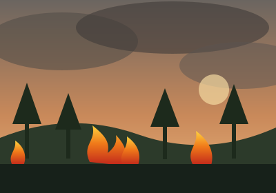

Berita Kalimantan
Selasa, 29 September 2026
Karhutla Kalimantan
Ditulis oleh: Nama Siswa | Kelas X RPL | Rujukan: detikKalimantan

Jumlah titik panas (hotspot) di Kalimantan Tengah menurun tajam. Dari 134 titik, kini tinggal 37 titik yang terpantau, atau turun sekitar 72,4 persen. Meski begitu, Kementerian Kehutanan meminta semua pihak tetap waspada karena kebakaran hutan dan lahan (karhutla) masih berpotensi muncul selama musim kemarau belum berakhir.
Di Kabupaten Kotawaringin Timur (Kotim), pemerintah daerah memperpanjang status tanggap darurat karhutla dan kekeringan sampai 15 Oktober 2026. Perpanjangan ini dilakukan karena api masih ditemukan di sejumlah titik. Pemkab berharap hujan segera turun sehingga lahan menjadi basah dan risiko kebakaran ikut menurun.
Dampak karhutla tidak hanya dirasakan manusia. Dua ekor orang utan, seorang induk bersama anaknya, berhasil dievakuasi dari pohon kering yang terbakar di Kalimantan Tengah. Proses penyelamatan berlangsung tidak mudah karena kondisi pohon yang rapuh dan api yang masih membara di sekitarnya.
Di Kabupaten Sukamara, seekor bayi orang utan juga ditemukan seorang diri di area yang terbakar, di luar kawasan kebun milik PT HHK. Bayi orang utan itu kehilangan induk sekaligus tempat tinggalnya.
Secara nasional, Kementerian Lingkungan Hidup menindak tegas pelaku pembakaran lahan. Pada tahun 2026 ini tercatat 138 orang ditetapkan sebagai tersangka dan 68 perusahaan disegel, sementara upaya pemulihan lahan terus dilakukan.
Pencegahan karhutla dimulai dari hal sederhana: tidak membakar sampah atau lahan sembarangan, tidak membuang puntung rokok di area kering, dan segera melapor kepada petugas jika melihat api atau asap di hutan maupun lahan gambut.
Sumber berita: Jumlah Hotspot di Kalteng Turun 72 Persen, Pemkab Kotim Perpanjang Tanggap Darurat, dan 2 Orang Utan Dievakuasi dari Pohon Terbakar (detik.com, 29 September 2026). Artikel ini ditulis ulang untuk tugas praktikum.